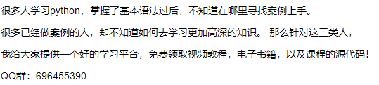

1000个读者心中有1000个哈姆雷特,要问1000个程序员“什么才是最好的语言”,Java、Python、PHP、C++ 也都有自己的位置。但要问编程语言流行指数之王非，那真的非Python莫属了。
据Stack Overflow数据显示，Python是使用量增长比较快的编程语言。
福布斯新发布的一篇报告指出，python的使用量在去年增长了456%。Netfix、IBM以及其它数以百计的公司都在使用python。包括Dropbox也是由python创建的。Dice的研究表明，python是世界上最热门的技巧之一，根据编程语言的流行度指数来看，python同时也是很受欢迎的编程语言。

那是因为，与其它编程语言相比，Python有以下5点优势：
1、和主流平台、操作系统兼容。
2、包含许多开源框架和工具。
3、编码具有可读性和可维护性
4、强大的标准库
5、标准的测试驱动开发
较低的学习门槛和广阔的发展前景使得Python越来越受欢迎。今天，小芯就继续给大家带来有关python非常有用的10个代码小技巧，帮助你完成日常工作，请注意查收和学习哟~
假设要合并相同长度的列表并打印结果。同样有一种更通用的方式，即用zip()函数获得想要的结果，代码如下：
countries= ['France', 'Germany', 'Canada']
capitals = ['Paris', 'Berlin', 'Ottawa']
for country, capital in zip(countries,capitals):
print(country, capital) # FranceParis
GermanyBerlin
CanadaOttawa
Python collections是容器数据类型，即列表、集合、元组、字典。Collections模块提供了可以增强代码的高性能数据类型，使工作更加简洁容易。它还提供了许多功能，以下使用Counter() 函数进行演示。
Counter() 函数采用一个可迭代对象(如列表或元组)，并返回一个Counter字典。字典的键是迭代器中唯一存在的元素，每个键的值是该元素在迭代器中出现次数的计数。
为创建一个Counter对象，将一个迭代的(列表)传递给Counter()函数，代码如下。
fromcollections import Countercount = Counter(['a','b','c','d','b','c','d','b'])
print(count) # Counter({'b': 3, 'c': 2, 'd': 2, 'a': 1})
Python的itertools模块是用于处理迭代器的工具集合。Itertools包含多种工具，用于生成输入数据的可迭代结果。这里以itertools.combinations()为例。itertools.combinations()用于构建组合。这些是输入量的可能组合项。
举一个现实中的例子来阐明以上观点：
假设一个锦标赛中有4个队伍，在联赛阶段，每个队伍都要与其他每个队伍进行比赛。任务是列出所有比赛队伍的可能组合。
代码如下：
importitertools
friends = ['Team 1', 'Team 2', 'Team 3', 'Team 4']
list(itertools.combinations(friends, r=2)) # [('Team 1', 'Team 2'), ('Team 1', 'Team 3'), ('Team 1', 'Team 4'), ('Team 2', 'Team 3'), ('Team 2', 'Team 4'), ('Team 3', 'Team 4')]
需要注意的是，值的顺序不重要。因为('Team 1', 'Team 2')和('Team 2', 'Team 1')代表同一对，所以输出列表只需包含其中一个。相似的，可以使用itertools.permutations()以及来自该模块的其他函数。如需更完整的参考资料，请查阅此教程。
Python可从函数调用中返回多个值，这是许多其他流行编程语言所不具备的功能。在这种情况下，返回值应为逗号分隔的值列表，然后python构造一个元组并返回给调用方。代码示例如下：
defmultiplication_division(num1, num2):
return num1*num2, num1/num2product,division = multiplication_division(15, 3)
print("Product=", product, "Quotient =", division) #Product= 45 Quotient = 5.0
列表推导式用于从其他可迭代对象中创建新列表。列表推导式返回列表时，由包含表达式的方括号组成，该表达式对于每个元素以及用于循环遍历每个元素的for循环执行。由于对python解释器进行了优化，可以在循环期间发现可预测的模式，因此列表推导速度更快。
如下，使用列表推导式计算前五个整数的平方：
m = [x** 2 for x in range(5)]
print(m) # [0, 1, 4, 9, 16]
再如，使用列表推导式查找两个列表中的公共数字
list_a =[1, 2, 3, 4]
list_b = [2, 3, 4, 5]
common_num = [a for a in list_a for b in list_b if a == b]
print(common_num) # [2, 3, 4]
假设有两个列表，一个列表内容为学生姓名，另一个内容为学生分数。使用zip函数，将这两个列表转换为一个字典，代码如下：
students= ["Peter", "Julia", "Alex"]
marks = [84, 65, 77]
dictionary = dict(zip(students, marks))
print(dictionary) # {'Peter': 84, 'Julia': 65, 'Alex': 77}
拼接字符串时可用for循环来逐个添加元素，但这非常低效(特别是当列表很长时)。在python中，字符串是不可变的，因此拼接字符串时，必须将左、右字符串复制到新的字符串中。
更好的方法是使用join() 函数，如下所示：
characters= ['p', 'y', 't', 'h', 'o', 'n']
word = "".join(characters)
print(word) # python
在python中使用内置函数sorted()可以轻而易举地对任何序列进行排序，它能完成很多艰难的工作。sorted()可对任何序列(列表、元组)进行排序，并返回已排序的元素列表。如下对数字进行升序排列：
sorted([3,5,2,1,4])# [1, 2, 3, 4, 5]
如下对字符串进行降序排列:
sorted(['france','germany', 'canada', 'india', 'china'], reverse=True) # ['india', 'germany','france', 'china', 'canada']
Enumerate()方法向可迭代对象添加一个计数器，并以枚举对象的形式返回。
以下是一个经典的编码方面的面试问题(通常被称为Fizz Buzz问题)。
编写一个程序来打印列表中的数字。若数字是3的倍数，输出“fizz”;是5的倍数，输出“buzz”;既是3又是5的倍数，输出“fizzbuzz”。
numbers= [30, 42, 28, 50, 15]
for i, num in enumerate(numbers):
if num % 3 == 0 and num % 5 == 0:
numbers[i] = 'fizzbuzz'
elif num % 3 == 0:
numbers[i] = 'fizz'
elif num % 5 == 0:
numbers[i] = 'buzz'
print(numbers) # ['fizzbuzz', 'fizz', 28, 'buzz', 'fizzbuzz']
generator函数允许创建类似迭代器的函数。他们允许程序员以一种简单快速的方式创建迭代器。下面通过一个例子来解释这个概念。
假设要对从1开始的前100000000个完全平方数求和。
看起来很容易对吧。使用列表推导式可以很轻松的做到这一点，但是它的输入量过大。下面为一示例：
t1 =time.clock()
sum([i * i for i in range(1, 100000000)])
t2 = time.clock()
time_diff = t2 - t1
print(f"It took {time_diff} Secs to execute this method") # Ittook 13.197494000000006 Secs to execute this method
在增加求和的完全平方数时，由于需要大量计算时间，这种方法并不够灵活。这时python生成器就派上用场了。将方括号替换为圆括号后，列表推导式更改为生成器表达式。现在计算花费的时间：
t1 = time.clock()
sum((i * i for i in range(1, 100000000)))
t2 = time.clock()
time_diff = t2 - t1
print(f"It took {time_diff} Secs to execute this method") # Ittook 9.53867000000001 Secs to execute this method
如上，所花费时间已大大减少。输入量越大，减少效果越显著。
随着人工智能的逐渐升温，Python作为人工智能领域开发的首选语言，其地位也将越来越重要。以前的“学好数理化，走遍天下都不怕”，如今可能要改口了——“学好python，走遍天下都不怕”。
所以，还在等什么，赶紧学会这10种实用的python小技巧，相信你的日常工作会更加666~